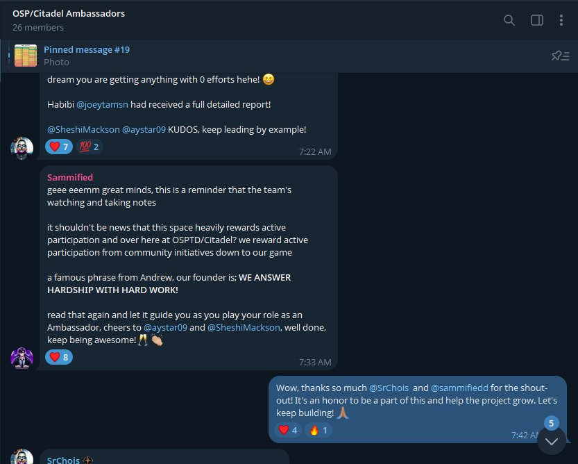
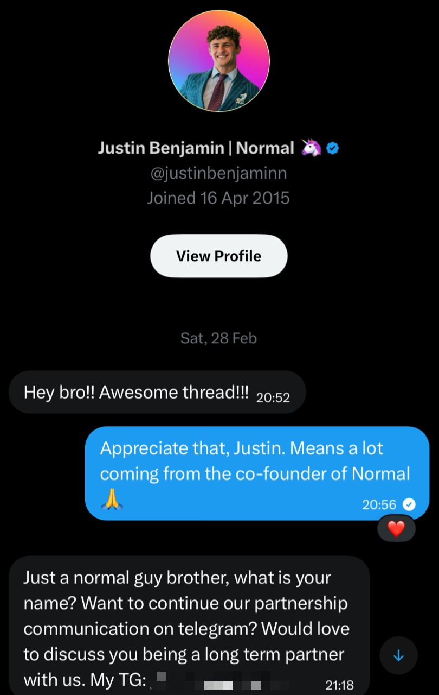
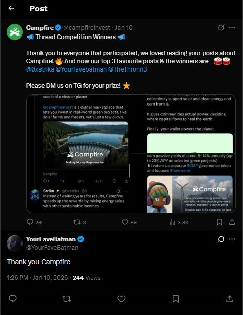

Most projects build in the dark. Not because the tech is bad — because no one explained it in a way a real person could follow. I fix that. I write threads, articles, and campaign content that educates first and converts naturally.
the work speaks. but so do the people it reached.



i don't shill. i translate. there's a version of this industry that treats content like noise — high volume, low signal, copy-paste hype that sounds like every other thread you've scrolled past. that's not what i do.
i test products before writing about them. i turn down projects that don't make sense. i include honest caveats when the data has limits. and i write to one person — not a crowd.
available for ambassador roles, content partnerships, bounty campaigns, and community building. if you're building something real and need someone to explain it clearly — let's talk.